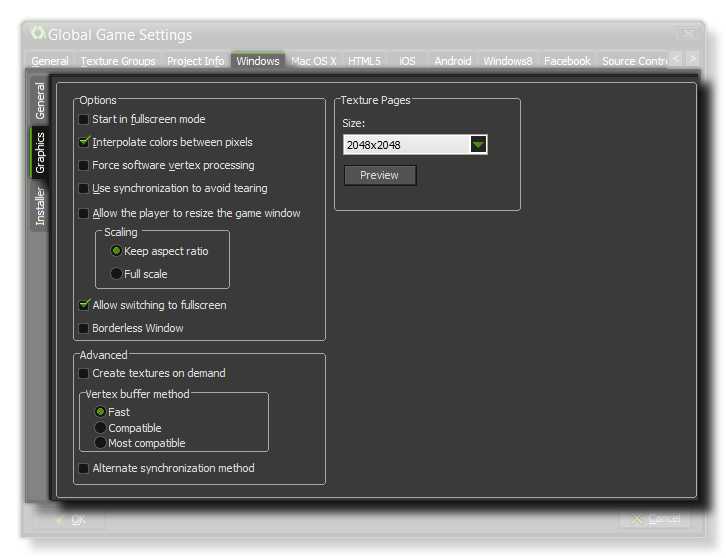

This Windows tab is split into three separate sub-tabs (accessible on the left of the window) to make changing and updating the information for your game clearer and less complicated. These tabs are explained in the following sections.
The
General tab for Windows games is where you should supply the
necessary information for Windows to display when your game has
been installed and is running. This information goes in the
Version Information section, and should be filled out
completely.
The other two sections of this tab are related to the way your
final game is shown once started, with the Splash Screen
being the graphic that is shown while your game is loading, and the
Options controlling whether you should display the standard
Windows cursor or not and the icon that your game should show. You
may also choose where the game bundle is to be installed to, either
the "%localappdata%" or "%appdata%" folders.
 The graphics
options are those that you should configure to determine how your
game will use the graphics card of your target Windows PC. The
following options are included for you to modify:
- Start in fullscreen mode - If this is checked, the game will start in fullscreen mode.
- Interpolate colours between pixels - Turns on interpolation, which basically "smooths" pixels. for crisp pixel graphics, it should be off, but if you have nice alpha blends and smoothed edge graphics it is better left on.
- Force software vertex processing - This forces GameMaker: Studio to use the CPU for all graphics and is only recommended if there are compatibility issues with older machines.
- Use synchronization to avoid tearing - This toggles v-sync on or off. Note, that if you have a game with a room speed of 120 and the player has a monitor with a refresh rate of 60, turning this option on will lock your game speed to 60 too.
- Allow the player to resize the game window - Checking this permits the user to change the size of the game window.
- Scaling - Here you can choose to maintain aspect ratio (so a 4:3 room will be "letter boxed" on a 16:9) or to scale fully (stretching the image to fit the full screen).
- Allow Switching To Fullscreen - With this ticked the user can switch from fullscreen to windowed and back again using the standard Windows shortcuts.
- Borderless Window - Checking this will make your game run with a borderless window, removing the normal minimise, maximise and close buttons as well as the game title.
WARNING! Switching off the application surface will
disable all the scaling options set in the Global Game Settings
until it has been switched back on again. See The
Application Surface for further details.
Finally there is the option to set the size of the Texture
Page. The default (and most compatible) size is 2048x2048, but
you can choose from anywhere between 256x256 up to a whopping
8192x8192! There is also a button marked View which will
generate the texture pages for this platform and then open a window
so that you can see how they look. This can be very useful if you
wish to see how the texture pages are structured and to prevent
having texture pages larger (or smaller) than necessary.
NOTE: Be aware that the larger the size of the texture
page, the less compatible your game will be.
Windows games are created with an installer (previous versions of GameMaker just made an *.exe) and here you can define the various settings and graphics that GameMaker: Studio will use when creating it. First of all we have the graphical options which will define the look of the installer itself:
- Finished - The graphic that appears on the "Finished" page of the installer. Must be in *.bmp format and measure 164x314px.
- Header - The graphic that appears while the installer is running. Must be in *.bmp format and measure 150x57px.
You can also point to a specific License Agreement (an
example is supplied with GameMaker: Studio) and a custom NSI script
(details here)
should you need one.
| Converted from CHM to HTML with chm2web Pro 2.85 (unicode) |